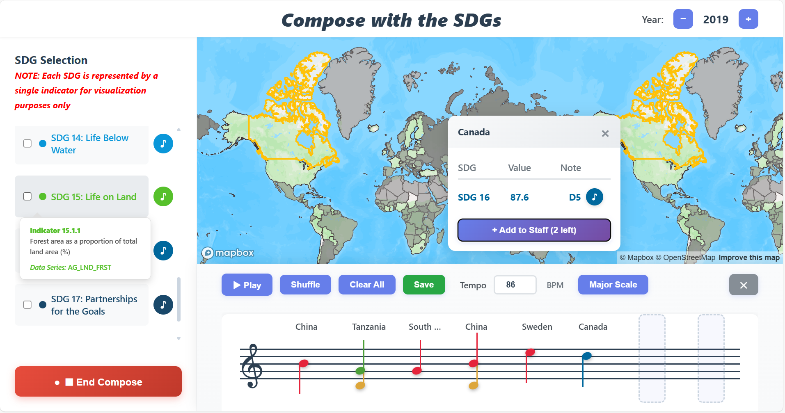

Compose with
the SDGs
The paper examines how composing music with Sustainable Development Goal data shapes the way people explore it.
An interactive web prototype for exploring data across all 17 Sustainable Development Goals. People select goals and places on a map, then shape the resulting notes on a musical staff. Each goal has its own instrument, while data values determine pitch. Listeners can play, rearrange, and save a composition.
MY ROLE
Web design & development; user evaluation; report contributions
METHODS
Map interaction · Web Audio API & Tone.js · User study
Interactive prototype and user study materials available on request.
Accepted at the International Conference on Auditory Display (ICAD 2026)